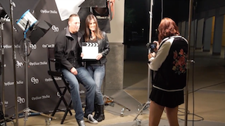

-
General Demo Reel
Opificer Media
-
Ashley & Philip
Wedding Montage
-
Ambulante Festival
Event Commercial Video
-
Salon Bella
Commercial
-
Oodles of Noodles
Commercial
-

Tim Farley Crawford Award
Award Presentation Video
-

Media Student Film Festival (BTS)
Behind the Scenes
-
Tributes to Passion (Episdode 1)
Web Series
-
Ruchi & Mitul's Wedding
Wedding Montage
-
Tributes to Passion (Episode 2)
Web Series
-
Tributes to Passion (Episode 3)
Web Series